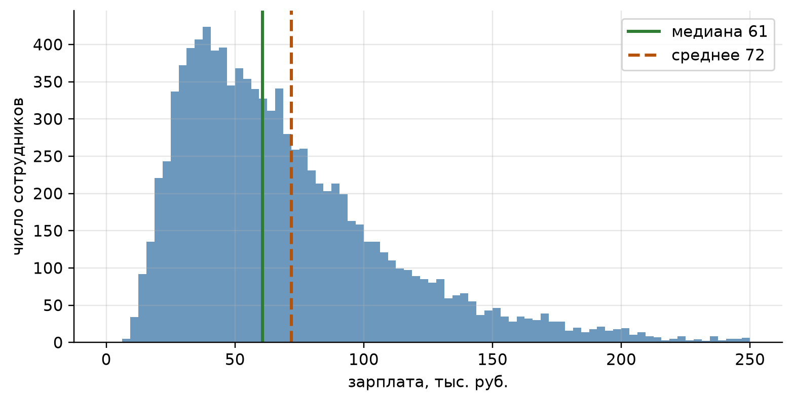
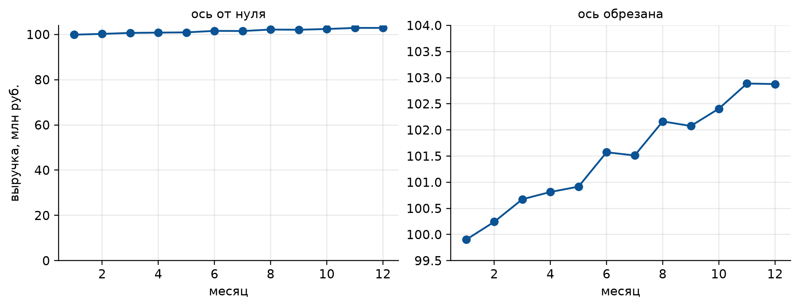
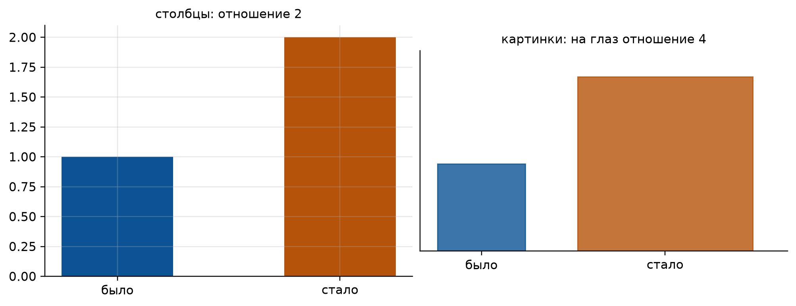

import numpy as np
import matplotlib.pyplot as plt
from matplotlib.patches import Rectangle
# Оформление графиков: шрифт с кириллицей и палитра, различимая при печати
PALETTE = ["#0b5394", "#b45309", "#2e7d32", "#7b1fa2", "#c62828", "#00838f"]
plt.rcParams.update({
"font.family": "sans-serif",
"font.sans-serif": ["DejaVu Sans", "Liberation Sans", "Noto Sans", "sans-serif"],
"axes.unicode_minus": False,
"axes.prop_cycle": plt.cycler(color=PALETTE),
"axes.spines.top": False,
"axes.spines.right": False,
"axes.grid": True,
"grid.alpha": 0.3,
"figure.dpi": 110,
"figure.constrained_layout.use": True,
})
# Генератор случайных чисел с фиксированным зерном: результаты воспроизводимы
rng = np.random.default_rng(2026)
def lucky_share(group_size, effect=0.23, mean=3.0, trials=100_000):
"""Доля опытов, где без всякого эффекта у «новой пасты» кариеса на effect меньше.
В обеих группах по group_size детей, число кариозных зубов у ребёнка
пуассоновское со средним mean, то есть паста ничего не меняет.
"""
control = rng.poisson(mean, size=(trials, group_size)).mean(axis=1)
paste = rng.poisson(mean, size=(trials, group_size)).mean(axis=1)
return np.mean(paste <= (1 - effect) * control)Приложение A — Как лгать при помощи статистики
Теория вероятностей и математическая статистика · НИЯУ МИФИ
В 1954 году американский журналист Даррелл Хафф выпустил тонкую книжку «How to Lie with Statistics» (Huff 1954 г.). В ней нет ни одной формулы сложнее среднего арифметического, зато есть каталог приёмов, которыми цифры превращают в рекламу, политику и заголовки. Книга стала одной из самых продаваемых книг о статистике и до сих пор читается за вечер. Есть русский перевод: «Как лгать при помощи статистики» (Альпина Паблишер, перевод Е. Лалаян).
Название обманчиво: это не пособие для лжецов, а прививка для читателя. Хафф объясняет, что почти никто не врёт цифрами прямо. Цифры обычно верны; обманывает то, какие цифры показали, как их нарисовали и что о них умолчали. С этого семестра у вас есть всё, чтобы такие приёмы ловить: закон больших чисел, ЦПТ, выборка, среднее и медиана, корреляция. Ниже главные сюжеты книги, каждый привязан к тому, что мы уже разобрали на семинарах.
УведомлениеЗачем это читать будущему инженеру и физику
Статистику, которую вы увидите в жизни, почти никогда не будете считать сами: её покажут на слайде, в статье, в отчёте или в новости. Умение задать к чужому графику три правильных вопроса полезнее, чем умение посчитать дисперсию. Книга Хаффа учит именно этим вопросам.
A.1 Код для этой главы
Все импорты и функции, которые используются в примерах приложения, собраны в одной ячейке. Выполните её первой.
A.2 Выборка со встроенным смещением
Осенью 1936 года журнал Literary Digest разослал анкеты миллионам американцев, получил больше двух миллионов ответов и уверенно предсказал победу республиканца Лэндона над Рузвельтом. Рузвельт выиграл с огромным отрывом. Адреса брали из телефонных книг и списков владельцев автомобилей, а в годы Великой депрессии телефон и машина были у обеспеченных людей, которые чаще голосовали за республиканцев. Кроме того, ответили те, кому было не лень отвечать. Джордж Гэллап по выборке в десятки раз меньше предсказал результат верно.
Связь с курсом. Закон больших чисел обещает, что \(\bar x\) сходится к среднему той совокупности, из которой на самом деле взяты наблюдения. Если это не та совокупность, о которой задан вопрос, рост \(n\) не помогает: случайная ошибка порядка \(\sigma/\sqrt n\) уменьшается, а систематическая (смещение) остаётся какой была. Два миллиона анкет дали очень точную оценку не той величины.
Вопрос, который стоит задать: кого не спросили? Опрос на сайте, отзывы покупателей, «9 из 10 стоматологов рекомендуют» всегда отвечают на вопрос о тех, кто попал в выборку.
A.3 Удачно выбранное среднее
«Средняя зарплата в компании 72 тысячи» и «типичный сотрудник получает 60 тысяч» могут быть правдой одновременно. Когда распределение несимметрично (доходы, цены квартир, размеры файлов), длинный правый хвост тянет среднее вверх, а медиана остаётся там, где большинство. Хафф иронизирует: выбирая между средним, медианой и модой, можно получить ровно ту цифру, которая нужна, и ни разу не соврать.
pay = rng.lognormal(np.log(60), 0.6, size=10_000)
mean_pay, median_pay = pay.mean(), np.median(pay)
fig, ax = plt.subplots(figsize=(7, 3.5))
ax.hist(pay, bins=80, range=(0, 250), color=PALETTE[0], alpha=0.6)
ax.axvline(median_pay, color=PALETTE[2], lw=2, label=f"медиана {median_pay:.0f}")
ax.axvline(mean_pay, color=PALETTE[1], lw=2, ls="--", label=f"среднее {mean_pay:.0f}")
ax.set_xlabel("зарплата, тыс. руб.")
ax.set_ylabel("число сотрудников")
ax.legend()
plt.show()
print(f"доля получающих меньше среднего: {np.mean(pay < mean_pay):.1%}")
доля получающих меньше среднего: 61.1%Связь с курсом. На семинаре 8 в таблице выборочных характеристик стоят и \(\bar x\), и медиана, и мода. Теперь видно, зачем все три: для несимметричных данных они отвечают на разные вопросы. Вопрос к любому «в среднем»: какое именно среднее и как выглядит распределение?
A.4 Маленькие цифры, которых нет
Реклама зубной пасты: «у пользователей нашей пасты на 23 % меньше кариеса». Мелким шрифтом (или вообще нигде) сказано, что в группе было 12 человек. Хафф описывает, как такие результаты получают честно: ставят много маленьких опытов и публикуют удачный.
Проверим, насколько это легко. Пусть паста ничего не делает: у каждого ребёнка число кариозных зубов пуассоновское со средним 3, в обеих группах одинаково. Как часто «новая паста» всё равно покажет снижение на 23 % и больше?
for size in [12, 50, 500]:
print(f"группы по {size:>3} человек: «эффект» 23 % в {lucky_share(size):.1%} опытов")группы по 12 человек: «эффект» 23 % в 13.6% опытов
группы по 50 человек: «эффект» 23 % в 1.2% опытов
группы по 500 человек: «эффект» 23 % в 0.0% опытовПри группах по 12 человек «эффект» выпадает примерно в каждом седьмом опыте. Проведите двадцать таких опытов, и в рекламу почти наверняка попадут два-три. При группах по 500 человек случайность такого не делает.
Связь с курсом. Это ЦПТ в действии: разброс среднего по группе порядка \(\sigma/\sqrt n\), при \(n = 12\) он велик, и разница в 23 % лежит в пределах шума. Вопрос: сколько было наблюдений и сколько было опытов?
Близкий сюжет у Хаффа называется «много шума из ничего»: два числа, различие между которыми меньше погрешности измерения (IQ 98 и 101, рейтинг 4,6 и 4,7), подают как реальную разницу. Без указания разброса разность двух средних ничего не говорит.
A.5 График «ого!»
Самый простой приём: обрезать ось \(y\). Рост на 3 % становится крутым взлётом, если ось начинается не с нуля, а чуть ниже первого значения.
months = np.arange(1, 13)
revenue = 100 + 3 * (months - 1) / 11 + rng.normal(0, 0.15, size=12)
fig, axes = plt.subplots(1, 2, figsize=(9, 3.4))
for ax, (low, title) in zip(axes, [(0, "ось от нуля"), (99.5, "ось обрезана")]):
ax.plot(months, revenue, marker="o", color=PALETTE[0])
ax.set_ylim(low, 104)
ax.set_title(title, fontsize=10)
ax.set_xlabel("месяц")
axes[0].set_ylabel("выручка, млн руб.")
plt.show()
Обрезанная ось не всегда обман: иногда интересны именно малые изменения (температура тела, курс валюты). Обман начинается, когда график должен произвести впечатление размера, а показывает только наклон. Вопрос: откуда начинается ось?
A.6 Одномерная картинка
Зарплата выросла вдвое, и художник рисует мешок с деньгами вдвое выше. Но чтобы мешок не стал тощим, его рисуют вдвое шире, и глаз видит площадь: она выросла вчетверо. Если картинка объёмная (бочка, дом), объём вырос в восемь раз.
fig, axes = plt.subplots(1, 2, figsize=(9, 3.4))
axes[0].bar(["было", "стало"], [1, 2], color=[PALETTE[0], PALETTE[1]], width=0.5)
axes[0].set_title("столбцы: отношение 2", fontsize=10)
for side, x0, color in [(1, 0.2, PALETTE[0]), (2, 1.8, PALETTE[1])]:
axes[1].add_patch(Rectangle((x0, 0), side, side, color=color, alpha=0.8))
axes[1].set_xlim(0, 4.2)
axes[1].set_ylim(0, 2.3)
axes[1].set_aspect("equal")
axes[1].set_xticks([0.7, 2.8], ["было", "стало"])
axes[1].set_yticks([])
axes[1].grid(False)
axes[1].set_title("картинки: на глаз отношение 4", fontsize=10)
plt.show()
Это тот же эффект, что у гистограммы с неравными интервалами: глаз читает площадь, поэтому на семинаре 8 высоту столбца делят на ширину интервала, \(n_i/(nh)\). Вопрос: что пропорционально числу: высота или площадь?
A.7 После этого, значит, вследствие этого
Курящие студенты учатся хуже некурящих. Значит ли это, что курение вредит учёбе? Может быть, плохие оценки толкают к сигаретам. Может быть, на то и другое влияет третий фактор: характер, режим, компания. Хафф собирает много таких историй: зарплаты пасторов в Массачусетсе росли вместе с ценой рома в Гаване (обе цифры тянул вверх общий рост цен), выпускники колледжей зарабатывают больше (но в колледж и попадали дети из обеспеченных семей).
Связь с курсом. На семинаре 5 мы считали коэффициент корреляции \(\rho(X, Y)\). Он измеряет согласованность изменения двух величин, и только её. Корреляция бывает из-за причинной связи в любую сторону, из-за общей причины или просто случайно, если перебрать достаточно много пар величин. Вопрос: нет ли третьей величины, которая двигает обе?
Родственный приём Хафф называет «полупривязанной цифрой»: доказывают одно, а предъявляют цифру про другое. «Лекарство убивает 99 % бактерий в пробирке» ничего не говорит о том, вылечит ли оно человека.
A.8 Пять вопросов к любой цифре
Книга заканчивается главой о том, как «дать отпор» статистике. Хафф предлагает пять вопросов:
- Кто это говорит? Кому выгоден вывод: производителю, заказчику исследования, автору с готовой гипотезой?
- Откуда он это знает? Как получены данные, кто попал в выборку, сколько было наблюдений?
- Чего не хватает? Объёма выборки, разброса, базы для сравнения, начала оси, какое именно среднее?
- Не подменили ли предмет разговора? Измерили одно, а вывод сделали о другом (анкета вместо поведения, пробирка вместо человека, корреляция вместо причины).
- Есть ли в этом смысл? Правдоподобна ли цифра хотя бы по порядку величины? Точность «до третьего знака» у прикидки сама по себе подозрительна.
A.9 Ирония напоследок
У книги есть поучительное продолжение. В 1960-е Хафф работал на табачную индустрию: выступал в Конгрессе США со скепсисом по поводу связи курения и рака, а затем написал рукопись «How to Lie with Smoking Statistics», которая так и не вышла и нашлась в архивах табачных компаний много лет спустя. Автор лучшего учебника по распознаванию статистических уловок применил свои знания к тому, чтобы посеять сомнения в одном из самых надёжно установленных медицинских фактов XX века. Первый вопрос из списка выше, «кто это говорит?», относится и к нему.
Именно поэтому книгу стоит прочитать: умение задавать эти вопросы не зависит от того, кто вас ему научил.
Huff, Darrell. 1954 г. How to Lie with Statistics. W. W. Norton.